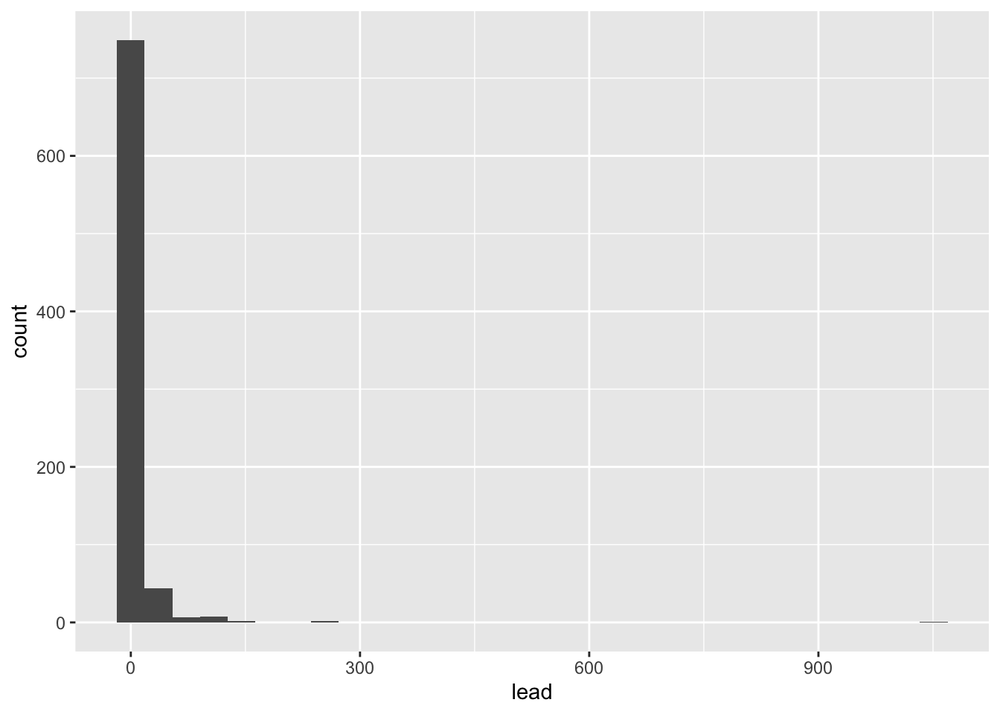
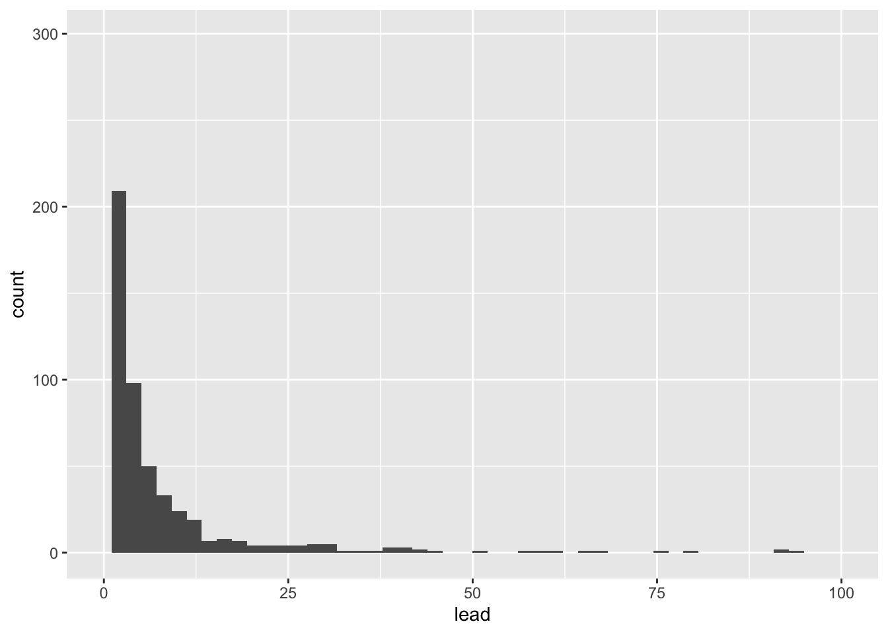
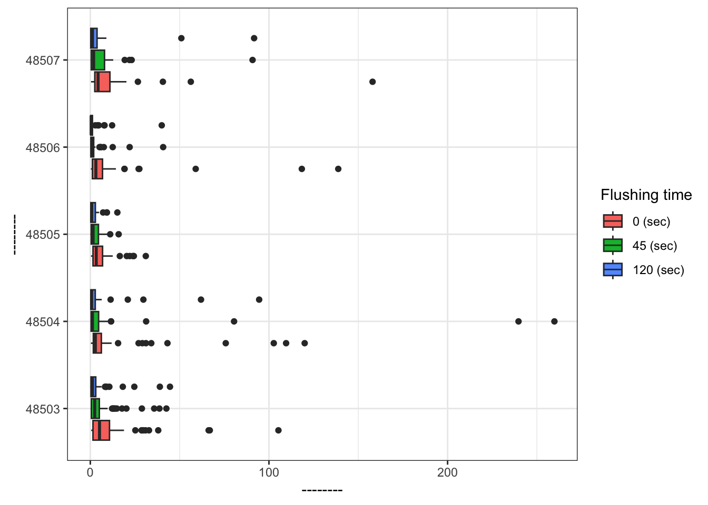
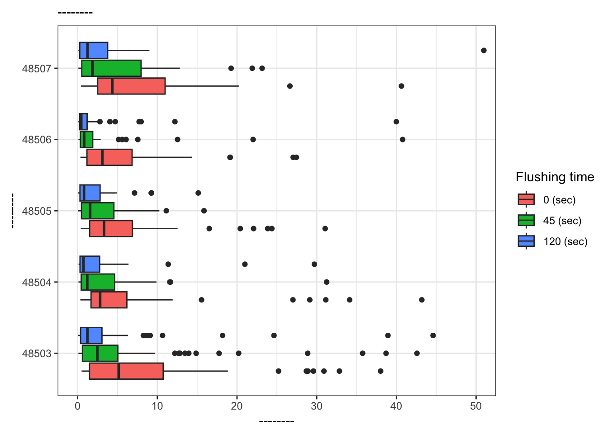

library(tidyverse)Intro to R and EDA
STA 101
Bulletin
- first lab tomorrow, due following Thursday at 11:59pm on Gradescope
- be sure to complete prepare material (on the schedule) before each class
Today
By the end of today you will…
- practice using
glimpse(),names(),nrow(),ncol(),count() - define and compute various statistics
- begin to gain familiarity with
ggplot
Getting started
Download this application exercise by pasting the code below into your console (bottom left of screen)
download.file("https://sta101-fa22.netlify.app/static/appex/ae2.qmd",
destfile = "ae2.qmd")- A note on navigating RStudio
- Source code vs visual editor
- code chunks and narrative
- file system
Load packages
- A package within a package…
The tidyverse package contains the dplyr and ggplot packages we will use today. ggplot contains functions for plotting data while dplyr contains tools to wrangle, manipulate and summarize data frames.
Load data
flint = read_csv("https://sta101-fa22.netlify.app/static/appex/data/flint.csv")Data dictionary
id: sample ID number (identifies the home)zip: ZIP code in Flint of the sample’s locationward: ward in Flint of the sample’s locationdraw: which time point the water was sampled fromlead: lead content in parts per billion
Goal
We want to learn about the population using a sample.
In the case we want to learn about the lead content in all of Flint, MI homes but only have available water readings from a sample of homes (our data set).
Exercise 1:
Look at the data, how many observations are there? How many variables?
[answer here]
Count
Let’s count() to find the number of different time points water was sampled.
count(flint, draw)# A tibble: 3 × 2
draw n
<chr> <int>
1 first 271
2 second 271
3 third 271How many unique homes are in the data set?
flint %>%
count(id)# A tibble: 269 × 2
id n
<dbl> <int>
1 1 3
2 2 3
3 4 3
4 5 3
5 6 3
6 7 3
7 8 3
8 9 3
9 12 3
10 13 3
# ℹ 259 more rows- A note on pipes
%>%
Exercise 2
Fill in the code to see how many samples were taken from each zip code. Uncomment the lines (i.e. remove the # before running the code)
# flint %>%
# count(______)Which ZIP code had the most samples drawn?
Statistics
What is a statistic? It’s any mathematical function of the data. Sometimes, a statistic is referred to as “sample statistic” since you compute it from a sample (the data) and not the entire population.
measure of central tendency:
- mean
- median
- mode
measures of spread:
- variance
- standard deviation
- range
- quartiles
- inter-quartile range (IQR)
order statistics:
- quantiles
- minimum (0 percentile)
- median (50th percentile)
- maximum (100 percentile)
… and any other arbitrary function of the data you can come up with!
Exercise 3:
Come up with your own statistic and write it in the narrative here.
To access a column of the data, we’ll use data$column.
Let’s compute each of these statistics for lead ppb in R.
# code herePlotting
Let’s take a look at the distribution of lead content in homes in Flint, MI.
flint %>% # data
ggplot(aes(x = lead)) + # columns we want to look at
geom_histogram() # geometry of the visualization`stat_bin()` using `bins = 30`. Pick better value with `binwidth`.
We can make this plot look nicer by adjusting the number of bins and/or the x-axis.
flint %>% # data
ggplot(aes(x = lead)) + # columns we want to look at
geom_histogram(bins = 50) + # geometry of the visualization
xlim(0, 100) # limit the x-axis to a certain range
Let’s visualize some of our summary statistics on the plot.
Exercise 4:
Un-comment the code below and fill in the blank with the mean.
flint %>%
ggplot(aes(x = lead)) +
geom_histogram(bins = 50) +
xlim(0,100) #+
#geom_vline(xintercept = __, color = 'red')Add another geom_vline with the median. Use a separate color.
Box plots
Let’s make some plots, where we will focus on zip codes 48503, 48504, 48505, 48506, and 48507. We will restrict our attention to samples with lead values less than 1,000 ppb.
flint_focus <- flint %>%
filter(zip %in% 48503:48507, lead < 1000)Below are side-by-side box plots for the three flushing times in each of the five zip codes we considered. Add x and y labels; add a title by inserting title = "title_name" inside the labs() function.
ggplot(data = flint_focus, aes(x = factor(zip), y = lead)) +
geom_boxplot(aes(fill = factor(draw))) +
labs(x = "--------", y = "--------", fill = "Flushing time") +
scale_fill_discrete(breaks = c("first", "second", "third"),
labels = c("0 (sec)", "45 (sec)", "120 (sec)")) +
coord_flip() +
theme_bw()
Add labels for x, y, a title, and subtitle to the code below to update the corresponding plot.
ggplot(data = flint_focus, aes(x = factor(zip), y = lead)) +
geom_boxplot(aes(fill = factor(draw))) +
labs(x = "--------", y = "--------", fill = "Flushing time",
subtitle = "--------") +
scale_fill_discrete(breaks = c("first", "second", "third"),
labels = c("0 (sec)", "45 (sec)", "120 (sec)")) +
coord_flip(ylim = c(0, 50)) +
theme_bw()
What is the difference between the two plots? What are the advantages and disadvantages to each plot?
References
Langkjaer-Bain, R. (2017). The murky tale of Flint’s deceptive water data. Significance, 14: 16-21.
Kelsey J. Pieper, Rebekah Martin, Min Tang, LeeAnne Walters, Jeffrey Parks, Siddhartha Roy, Christina Devine, and Marc A. Edwards Environmental Science & Technology 2018 52 (15), 8124-8132 DOI: 10.1021/acs.est.8b00791